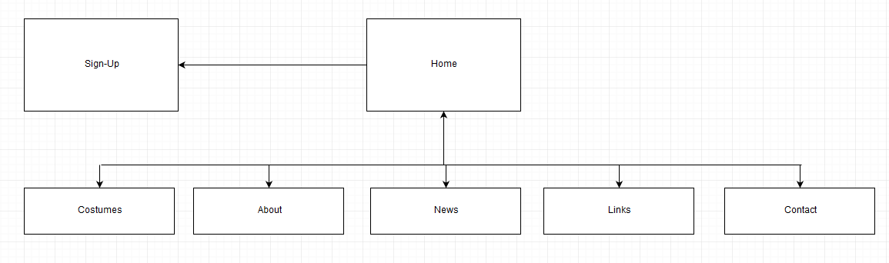

Name: Dean Fabris
Login: jc325299
CossiePlay has been operating for four years and are trying to improve their business by branching out with a focus on online presence.
The websites main goal is to allow customers(preferably the target audience) to book a spot online which will increase attendance to the monthly parties held by CossiePlay.
Its secondary goal is to sell cosplay items similar to an online store.
To measure the main goal of the website you would have to correlate the data of 'tickets' sold from before the website was implemented to after implementation. From a technical standpoint the evaluation would possibly
generate in failure as the devices used by the Target Demographic generally don't work well with 'fixed' webpages.
The target audience for this website is High School Kids to Young Adults, unfortunately the website I have generated does not scale well on Smartphones and Tablets. This may cause issues as this
is the type of devices that the intended audience usually have access to.

cwalken - github.com/cwalken/A1